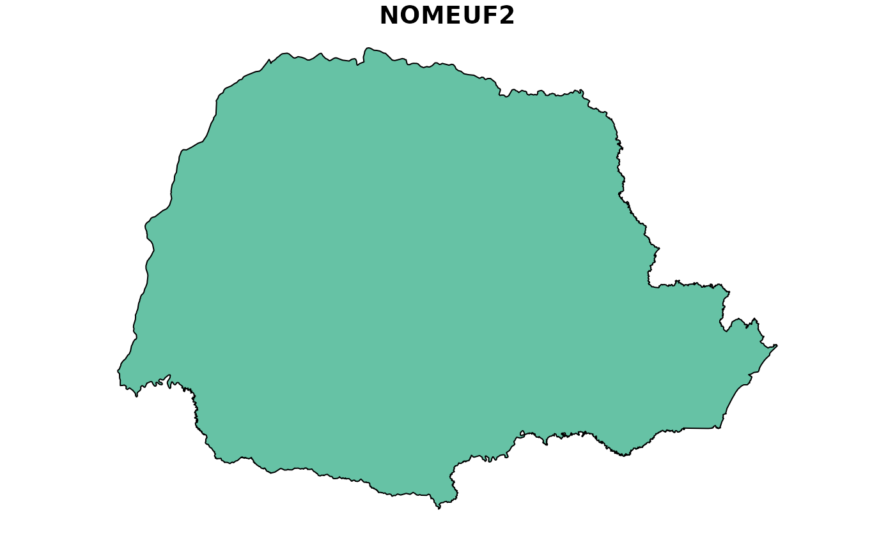

Projecting Non-native Distribution using SDMs
Source:vignettes/articles/InvasiveSpp.Rmd
InvasiveSpp.RmdIntroduction
One of the main uses for Species Distribution Models is to project
the impact of invasive species. To facilitate the use of
caretSDM in invasiveness assessments, we put this document
together. Here, we will build the Ecological Niche Model, i.e. the
mathematical model that describes the hypervolume that encompasses the
limiting values permitting a species to persist through time, for
Araucaria angustifolia using records on Paraná. We then project
the models into the Rio Grande do Sul state, further to the South, to
assess the invasiveness potential of the species.
This article may read repetitive, when comparing with others, but our aim here is to have a complete tutorial, thus some steps will be exactly as from other articles.
First, we need to open our library.
Pre-Processing
To obtain models, we will need climatic data and species records. To
easily obtain these data, we have two functions:
WorldClim_data function downloads climatic variables from
WorldClim 2.1, a widely used open-source database; in the same way,
GBIF_data function downloads species records from GBIF,
also a widely used open-source database. You can read more about them by
running in the console ?GBIF_data and
?WorldClim_data.
Obtaining species records
A easy way to get species data using caretSDM is the
function GBIF_data, which retrieves species records from
GBIF. Understandably, there are other sources of species data available,
as well as our own data that can be the result of field work. In this
sense, one can import to R it’s own data in multiple ways, but be sure
that the table must always have three columns: species, decimalLongitude
and decimalLatitude. GBIF_data function can retrieve the
data ready to be included in caretSDM, thus if you have any doubt on how
to format your own data, use GBIF_data function with the
parameter as_df = TRUE to retrieve an example table. As
standard, GBIF_data function sets
as_df = FALSE, which makes the function return a
occurrences object (more about that further below). An
example code for this step would be:
But we already have a occ object included in the
package, which is the same output, but with filtered records to match
our study area. Note that coordinates are in a metric CRS (EPSG:
6933).
occ |> head()
#> species decimalLongitude decimalLatitude
#> 1 Araucaria angustifolia -5071809 -3259770
#> 2 Araucaria angustifolia -4983891 -3283348
#> 3 Araucaria angustifolia -4748996 -3142075
#> 4 Araucaria angustifolia -4883188 -3092641
#> 5 Araucaria angustifolia -4766386 -3227445
#> 6 Araucaria angustifolia -4755861 -3139607Obtaining climatic data
For climatic data, we will first download and import current data,
which is used to build the models. WorldClim_data function
has an argument to set the directory in which you want to save the
files. If you don’t set it, files will be saved in your working
directory (run getwd() to find out your working directory)
in the folder “input_data/WorldClim_data_current/”. If period is set to
“future”, then it is saved in “input_data/WorldClim_data_future/”. We
could run this script with a smaller resolution, but as the aim here is
to show how the package works, we will use a resolution of 10
arc-minutes, which is very coarse, but quicker to download and run.
# Download current bioclimatic variables
WorldClim_data(path = NULL,
period = "current",
variable = "bioc",
resolution = 10)
# Import current bioclimatic variables to R
bioc <- read_stars(list.files("input_data/WorldClim_data_current/", full.names = T), along = "band", normalize_path = F)As we are aiming for a climate change assessment, we will also download future data.
WorldClim_data(path = NULL,
period = "future",
variable = "bioc",
year = "2090",
gcm = c("ca", "mi"),
ssp = c("245","585"),
resolution = 10)KEY CHANGE FOR INVASIVENESS ASSESSMENT:
In caretSDM, we will set the study area to match the region where the model will be trained. The region where models will be projected can be adapted from scenarios data. One can work around with this environmental data to adapt it using any package. We already have included in the package an object with current and future data for the Rio Grande do Sul state. To build it, we used an adaptation of the following code:
# THIS IS AN EXAMPLE CODE, IT MUST BE ADAPTED TO RUN CORRECTLY!!!
# Import aim area shape
rs <- st_read("Rio_Grande_do_Sul.shp")
# Import current data
current <- read_stars(list.files("WorldClim_data_current_folder", full.names=T), along = "band")
# Change name of current scenario
names(current) <- "current"
# Select variables and crop using the shape of the aim area
current <- sf::st_crop(current[,,,c("1.tif", "4.tif", "12.tif")], rs)
# Set names of variables to match future scenario
current <- stars::st_set_dimensions(current, "band", values = c("bio1", "bio4","bio12"))
# Import future data
future <- read_stars(list.files("WorldClim_data_future_folder", full.names=T))
# Change names of future scenarios
names(future) <- c("ca_ssp245_2090", "ca_ssp585_2090",
"mi_ssp245_2090", "mi_ssp585_2090")
# Select variables and crop using the shape of the aim area
future <- sf::st_crop(future[,,,c("bio01", "bio04", "bio12")], rs)
# Set names of variables to match current scenario
future <- stars::st_set_dimensions(future, "band", values = c("bio1", "bio4","bio12"))
# Sum scenarios
scen_rs <- c(current, future)The result should resemble the included object (see
?scen_rs for more information on the data).:
scen_rs
#> stars object with 3 dimensions and 5 attributes
#> attribute(s):
#> Min. 1st Qu. Median Mean 3rd Qu. Max. NA's
#> current 14.38403 19.5185 397.1582 668.0422 1467.000 2079.0 3204
#> ca_ssp245_2090 17.60000 23.0000 414.1000 677.0502 1516.225 2134.2 3264
#> ca_ssp585_2090 20.70000 26.6000 446.2500 688.5646 1551.125 2098.2 3264
#> mi_ssp245_2090 15.70000 20.8000 407.8500 721.1667 1608.125 2284.4 3264
#> mi_ssp585_2090 16.90000 22.1000 407.7500 754.2061 1679.425 2439.8 3264
#> dimension(s):
#> from to offset delta refsys point values x/y
#> x 735 782 -180 0.1667 WGS 84 FALSE NULL [x]
#> y 703 743 90 -0.1667 WGS 84 FALSE NULL [y]
#> band 1 3 NA NA NA NA bio1 , bio4 , bio12Defining the study area
A important step on model building in Species Distribution Models, is
the definition of accessible area (the M in BAM diagram). This area can
be, in Geographical Information Systems terms, as an example, the
delimitation of a habitat (polygon) or a river basin network (lines).
Another broadly used approach is the use of buffers around presences.
The buffer size translates the potential distribution capabilities of a
species. As our invasiveness assessment aims to build models in the
Parana state and project in the Rio Grande do Sul state, we will use a
simple polygon of Parana state boundaries as study area. This shape is
available in caretSDM as the parana object (see
?parana for more information on the data).
parana
#> Simple feature collection with 1 feature and 4 fields
#> Geometry type: MULTIPOLYGON
#> Dimension: XY
#> Bounding box: xmin: -54.61834 ymin: -26.71679 xmax: -48.02308 ymax: -22.51621
#> Geodetic CRS: WGS 84
#> GID0 CODIGOIB1 NOMEUF2 SIGLAUF3 geom
#> 1 19 41 PARANA PR MULTIPOLYGON (((-52.06416 -...
parana |> select_predictors(NOMEUF2) |> plot()
The sdm_area function is responsible to create a grid to
build models, a key aspect of caretSDM workflow. With a grid built,
modelers can pass multiple rasters with different resolutions, CRSs and
extents. The package will be responsible to rescale, transform and crop
every raster to match the grid. The grid returned by the
sdm_area function is from sdm_area class, a
class that will also keep the environmental/climatic data (i.e.
“predictor variables”, “covariates”, “explanatory variables”, “features”
or “control variables”). With this class we will perform analysis using
only the predictors. The grid is built using mostly the first three
arguments: (1) a shape from sf class, but rasters from
stars, rasterStack or SpatRaster
class are also allowed; (2) the cell size of the grid; and (3) the
Coordinate Reference System (CRS). Note that the cell size can be metric
or not depending on the CRS informed. It is important to inform a cell
size bigger than the coarser raster that will be used, otherwise
rescaling process may return empty cells. The rescaling can be performed
using GDAL (quicker but less precise) or the stars package
(slower but more precise). The first will address values to cells by
calculating the mean (for continuous variables) or the median (for
categorical variables) of the values falling within the cell. The
approach using stars will do the same thing, but weighting
for the area of each value within the cell. For other arguments meaning
see ?sdm_area.
sa <- sdm_area(parana,
cell_size = 25000,
crs = 6933,
variables_selected = NULL,
gdal = TRUE,
crop_by = NULL,
lines_as_sdm_area = FALSE)
#> ! Making grid over study area is an expensive task. Please, be patient!
#> ℹ Using GDAL to make the grid and resample the variables.
sa
#> caretSDM
#> ...........................
#> Class : sdm_area
#> Extent : -5276744 -3295037 -4626744 -2795037 (xmin, xmax, ymin, ymax)
#> CRS : WGS 84 / NSIDC EASE-
#> Resolution : (25000, 25000) (x, y)
#> Number of Predictors : 4
#> Predictors Names : GID0, CODIGOIB1, NOMEUF2, SIGLAUF3Note that the function returned four predictor variables
(Predictor Names above). These “predictors” are actually
columns included in the parana shape’s data table. One can
filter these variables using select_predictors function,
but we will not do that here, once the package will automatically drop
them further. You can explore the grid generated and stored in the
sdm_area object using the functions
mapview_grid() or plot_grid().
plot_grid(sa)
Now that we have a study area, we can assign predictor variables to
it. To do that, we use the add_predictors function, which
usually will only use the fist two arguments, which are the
sdm_area build in the previous step and the
RasterStack, SpatRaster or stars
object with predictors data. Note that add_predictors also
has a gdal argument, which works as the previous one in
sdm_area function.
sa <- add_predictors(sa,
bioc,
variables_selected = NULL,
gdal = TRUE)
#> ! Making grid over the study area is an expensive task. Please, be patient!
#> ℹ Using GDAL to make the grid and resample the variables.
sa
#> caretSDM
#> ...........................
#> Class : sdm_area
#> Extent : -5276744 -3295037 -4626744 -2795037 (xmin, xmax, ymin, ymax)
#> CRS : WGS 84 / NSIDC EASE-
#> Resolution : (25000, 25000) (x, y)
#> Number of Predictors : 7
#> Predictors Names : GID0, CODIGOIB1, NOMEUF2, SIGLAUF3, bio1, bio4, bio12Predictors variables are used to train the models. After training the
models, we need to project models into scenarios. Currently, we don’t
have any scenario in our sdm_area object. We can address
the predictors data as the current scenario by applying the function
add_scenario without considering any other argument. This
happens because the argument pred_as_scen is standarly set
to TRUE. However, in invasiveness assessments, we want to
project models into another region. This region was previously set as
the scen_rs object.
sa <- add_scenarios(sa,
scen = scen_rs,
scenarios_names = NULL,
pred_as_scen = FALSE,
variables_selected = NULL,
stationary = NULL)
#> Warning: Some variables in `variables_selected` are not present in `scen`.
#> ℹ Using only variables present in `scen`: bio1, bio4, and bio12
#> ! Making grid over the study area is an expensive task. Please, be patient!
#> ℹ Using GDAL to make the grid and resample the variables.
#> ! Making grid over the study area is an expensive task. Please, be patient!
#> ℹ Using GDAL to make the grid and resample the variables.
#> ! Making grid over the study area is an expensive task. Please, be patient!
#> ℹ Using GDAL to make the grid and resample the variables.
#> ! Making grid over the study area is an expensive task. Please, be patient!
#> ℹ Using GDAL to make the grid and resample the variables.
#> ! Making grid over the study area is an expensive task. Please, be patient!
#> ℹ Using GDAL to make the grid and resample the variables.
sa
#> caretSDM
#> ...........................
#> Class : sdm_area
#> Extent : -5276744 -3295037 -4626744 -2795037 (xmin, xmax, ymin, ymax)
#> CRS : WGS 84 / NSIDC EASE-
#> Resolution : (25000, 25000) (x, y)
#> Number of Predictors : 3
#> Predictors Names : bio1, bio4, bio12
#> Number of Scenarios : 5
#> Scenarios Names : current, ca_ssp245_2090, ca_ssp585_2090, mi_ssp245_2090, mi_ssp585_2090It is common that modelers need to subset variables that will inform
models. This can be due to statistical artifacts that are common in
quarter bioclimatic variables, or a causation subset, aiming for those
variables with causality effect on species distribution. The user may
also want to change scenarios names, predictors names or retrieve
predictors data. For that there are a myriad of functions that can be
found in the package, most of them under the help files of the functions
?add_predictors and ?add_scenarios, but also
?select_predictors.
Defining the occurrences set in the study area
As caretSDM has a strong GIS background, it is necessary
to explicitly tell which CRS is your data in. This will assure that
every GIS transformation is correct. occurrences_sdm
function creates a occurrences class (i.e. “response variable”,
“target” or “label”) that will be used in occurrences’ transformations
and functions, as pseudoabsences generation. For a reference, GBIF data
is in crs = 4326, but our records stored in occ object is
transformed to 6933 (see ?occ for more information on the
data).
oc <- occurrences_sdm(occ, crs = 6933)
oc
#> caretSDM
#> .......................
#> Class : occurrences
#> Species Names : Araucaria angustifolia
#> Number of presences : 420
#> =================================
#> Data:
#> Simple feature collection with 6 features and 1 field
#> Geometry type: POINT
#> Dimension: XY
#> Bounding box: xmin: -5071809 ymin: -3283348 xmax: -4748996 ymax: -3092641
#> Projected CRS: WGS 84 / NSIDC EASE-Grid 2.0 Global
#> species geometry
#> 1 Araucaria angustifolia POINT (-5071809 -3259770)
#> 2 Araucaria angustifolia POINT (-4983891 -3283348)
#> 3 Araucaria angustifolia POINT (-4748996 -3142075)
#> 4 Araucaria angustifolia POINT (-4883188 -3092641)
#> 5 Araucaria angustifolia POINT (-4766386 -3227445)
#> 6 Araucaria angustifolia POINT (-4755861 -3139607)
plot_occurrences(oc)
This next step assigns occurrences into a study area, excluding records outside the study area or with NAs as predictors.
oc <- join_area(oc, sa)
#> Warning: Some records from `occ` do not fall in `pred`.
#> ℹ 2 elements from `occ` were excluded.
#> ℹ If this seems too much, check how `occ` and `pred` intersect.The input_sdm class
In caretSDM we use multiple classes to perform our
analysis. Every time we perform a new analysis, objects keep the
information of what we did. Ideally, the workflow will have only one
object throughout it. The input_sdm class is the key class
in the workflow, where every function will orbitate. That class puts
occurrences, predictors, scenarios, models and predictions together to
perform analysis that are only possible when two or more of these
classes are available. First, we create the object by informing the
occurrences and the sdm_area.
i <- input_sdm(oc, sa)
i
#> caretSDM
#> ...............................
#> Class : input_sdm
#> -------- Occurrences --------
#> Species Names : Araucaria angustifolia
#> Number of presences : 418
#> -------- Predictors ---------
#> Number of Predictors : 3
#> Predictors Names : bio1, bio4, bio12
#> --------- Scenarios ---------
#> Number of Scenarios : 5
#> Scenarios Names : current ca_ssp245_2090 ca_ssp585_2090 mi_ssp245_2090 mi_ssp585_2090Data cleaning routine
As the first step in our workflow with the input_sdm
object, we will clean our occurrences data by applying a group of
functions from the package CoordinateCleaner. In this
function, we also provide a way to check for environmental duplicates,
by including a predictors object. This function also checks for records
in the sea if the species is terrestrial, but note that this can be
switched off if the studied species is not terrestrial. The way
caretSDM works, we can always overwrite the main
input_sdm object to update it. The function will return a
new object with all the previous information and the new information
obtained from the data_clean function, note that at the end
of the Data Cleaning information there is the Duplicated Cell method.
This method is only possible when we have both the
occurrence and predictors data.
i <- data_clean(i,
capitals = TRUE,
centroids = TRUE,
duplicated = TRUE,
identical = TRUE,
institutions = TRUE,
invalid = TRUE,
terrestrial = TRUE)
#> Cell_ids identified, removing duplicated cell_id.
#> Testing country capitals
#> Removed 0 records.
#> Testing country centroids
#> Removed 0 records.
#> Testing duplicates
#> Removed 0 records.
#> Testing equal lat/lon
#> Removed 0 records.
#> Testing biodiversity institutions
#> Removed 1 records.
#> Testing coordinate validity
#> Removed 0 records.
#> Testing sea coordinates
#> Reading layer `ne_110m_land' from data source `/tmp/RtmpzjMCxb/ne_110m_land.shp' using driver `ESRI Shapefile'
#> Simple feature collection with 127 features and 3 fields
#> Geometry type: POLYGON
#> Dimension: XY
#> Bounding box: xmin: -180 ymin: -90 xmax: 180 ymax: 83.64513
#> Geodetic CRS: WGS 84
#> Removed 0 records.
#> Predictors identified, procceding with grid filter (removing NA and duplicated data).Removing multicolinearity from predictors’ data
There are two main methods in the SDM literature to consider
multicolinearity in predictors data. One is the use of VIFs, which in
caretSDM is performed using
vif_predictorsfunction. There, users are able to perform
variables selection through usdm package. The function is a
wrapper for usdm::vifcor, where variables are kept given a
maximum threshold of colinearity. The standard is 0.5. Here is a example
code for demonstration:
i <- vif_predictors(i,
th = 0.5,
maxobservations = 5000,
variables_selected = NULL)Obtaining pseudoabsence data
Pseudoabsence data will be stored in the occurrences
object (inside the input_sdm). To generate them, you must
inform some parameters. Probably one of the most important arguments in
this function is the method. Currently, two methods are
implemented: a “random”, which takes random grid cells as
pseudoabsences; and a “bioclim” method, which creates a Surface Range
Envelope (SRE) using presence records, binarizes the projection of the
SRE using the th threshold and then retrieves
pseudoabsences outside the envelope. The number of pseudoabsences
created can be changed using the n_pa parameter. When set
to NULL, n_pa will be equal the number of occurrences (to
avoid imbalance issues). The number of sets of pseudoabsences is
adjusted with the n_set parameter in the function. The
argument variables_selected will inform which variables you
want to use to build your pseudoabsences/models. This can either be a
vector of variables names or a previously performed selection
method.
i <- pseudoabsences(i,
method = "bioclim",
n_set = 10,
n_pa = NULL,
variables_selected = "vif",
th = 0)
i
#> caretSDM
#> ...............................
#> Class : input_sdm
#> -------- Occurrences --------
#> Species Names : Araucaria angustifolia
#> Number of presences : 84
#> Pseudoabsence methods :
#> Method to obtain PAs : bioclim
#> Number of PA sets : 10
#> Number of PAs in each set : 84
#> Data Cleaning : NAs, Capitals, Centroids, Geographically Duplicated, Identical Lat/Long, Institutions, Invalid, Non-terrestrial, Duplicated Cell (grid)
#> -------- Predictors ---------
#> Number of Predictors : 3
#> Predictors Names : bio1, bio4, bio12
#> Area (VIF) : all
#> Threshold : 0.5
#> Selected Variables (VIF) : bio1, bio12
#> --------- Scenarios ---------
#> Number of Scenarios : 5
#> Scenarios Names : current ca_ssp245_2090 ca_ssp585_2090 mi_ssp245_2090 mi_ssp585_2090Processing
Modeling species relationship with variables
With the occurrences and predictors data put together, we can pass to
the modeling. As the name suggests, caretSDM uses the
caret package underlying its modeling procedure. For those
who are not familiar, caret is the easiest way to perform
Machine Learning analysis in R. It works by setting a modeling wrapper
to pass multiple packages and can provide a lot of automation regarding
algorithms fine-tuning, data spliting, pre-processing methods and
predictions. These automated functions from caret can be
altered using the ctrl argument in train_sdm
function. See ?caret::trainControl for all options
available.
We show here how to use a repeated crossvalidation method, which is
defined through caret::trainControl.
Note that, when you are using an algorithm for the first time, caret will ask you to install the relevant packages to properly run the algorithm.
ctrl_sdm <- caret::trainControl(method = "repeatedcv",
number = 4,
repeats = 1,
classProbs = TRUE,
returnResamp = "all",
summaryFunction = summary_sdm,
savePredictions = "all")
i <- train_sdm(i,
algo = c("naive_bayes", "kknn"),
variables_selected = "vif",
ctrl=ctrl_sdm) |> suppressWarnings()
#> Loading required package: ggplot2
#> Loading required package: lattice
#>
#> Attaching package: 'caret'
#> The following object is masked from 'package:caretSDM':
#>
#> predictors
i
#> caretSDM
#> ...............................
#> Class : input_sdm
#> -------- Occurrences --------
#> Species Names : Araucaria angustifolia
#> Number of presences : 84
#> Pseudoabsence methods :
#> Method to obtain PAs : bioclim
#> Number of PA sets : 10
#> Number of PAs in each set : 84
#> Data Cleaning : NAs, Capitals, Centroids, Geographically Duplicated, Identical Lat/Long, Institutions, Invalid, Non-terrestrial, Duplicated Cell (grid)
#> -------- Predictors ---------
#> Number of Predictors : 3
#> Predictors Names : bio1, bio4, bio12
#> Area (VIF) : all
#> Threshold : 0.5
#> Selected Variables (VIF) : bio1, bio12
#> --------- Scenarios ---------
#> Number of Scenarios : 5
#> Scenarios Names : current ca_ssp245_2090 ca_ssp585_2090 mi_ssp245_2090 mi_ssp585_2090
#> ----------- Models ----------
#> Algorithms Names : naive_bayes kknn
#> Variables Names : bio1 bio12
#> Model Validation :
#> Method : repeatedcv
#> Number : 4
#> Metrics :
#> $`Araucaria angustifolia`
#> algo ROC TSS Sensitivity Specificity
#> 1 kknn 0.9770617 0.9273936 0.96055 0.966675
#> 2 naive_bayes 0.9957792 0.9413799 0.97965 0.965175Post-Processing
Predicting species distribution in given scenarios
Now that we have our models, we can make predictions in new
scenarios. The function predict_sdm incorporates also the
prediction of ensembles (ensembles=TRUE is standard). The
function will only predict models that passes a given validation
threshold. This validation metric is set using metric and
th arguments. In the following example, metric is set to be
“ROC” and th is equal 0.9. This means that only models with ROC > 0.9
will be used in predictions and ensembles.
i <- predict_sdm(i,
metric = "ROC",
th = 0.9,
tp = "prob",
ensembles = TRUE)
#> [1] "Projecting: 1/5"
#> [1] "Projecting: 2/5"
#> [1] "Projecting: 3/5"
#> [1] "Projecting: 4/5"
#> [1] "Projecting: 5/5"
#> [1] "Ensembling..."
#> [1] "current"
#> [1] "Araucaria angustifolia"
#> [1] "ca_ssp245_2090"
#> [1] "Araucaria angustifolia"
#> [1] "ca_ssp585_2090"
#> [1] "Araucaria angustifolia"
#> [1] "mi_ssp245_2090"
#> [1] "Araucaria angustifolia"
#> [1] "mi_ssp585_2090"
#> [1] "Araucaria angustifolia"
i
#> caretSDM
#> ...............................
#> Class : input_sdm
#> -------- Occurrences --------
#> Species Names : Araucaria angustifolia
#> Number of presences : 84
#> Pseudoabsence methods :
#> Method to obtain PAs : bioclim
#> Number of PA sets : 10
#> Number of PAs in each set : 84
#> Data Cleaning : NAs, Capitals, Centroids, Geographically Duplicated, Identical Lat/Long, Institutions, Invalid, Non-terrestrial, Duplicated Cell (grid)
#> -------- Predictors ---------
#> Number of Predictors : 3
#> Predictors Names : bio1, bio4, bio12
#> Area (VIF) : all
#> Threshold : 0.5
#> Selected Variables (VIF) : bio1, bio12
#> --------- Scenarios ---------
#> Number of Scenarios : 5
#> Scenarios Names : current ca_ssp245_2090 ca_ssp585_2090 mi_ssp245_2090 mi_ssp585_2090
#> ----------- Models ----------
#> Algorithms Names : naive_bayes kknn
#> Variables Names : bio1 bio12
#> Model Validation :
#> Method : repeatedcv
#> Number : 4
#> Metrics :
#> $`Araucaria angustifolia`
#> algo ROC TSS Sensitivity Specificity
#> 1 kknn 0.9770617 0.9273936 0.96055 0.966675
#> 2 naive_bayes 0.9957792 0.9413799 0.97965 0.965175
#>
#> -------- Predictions --------
#> Ensembles :
#> Scenarios : current ca_ssp245_2090 ca_ssp585_2090 mi_ssp245_2090 mi_ssp585_2090
#> Methods : mean_occ_prob wmean_AUC committee_avg
#> Thresholds :
#> Method : threshold
#> Criteria : 0.9In the above print, it is possible to see the “Methods” under the
“Predictions” section, which informs which ensemble types were made:
mean occurrence probability (mean_occ_prob; a simple mean
between GCMs), mean occurrence probability weighted by AUC/ROC
(wmean_AUC; AUC/ROC values are used as weights), and the
majority rule, or the committee average (committee_avg; the
sum of binaries).
Besides the AUC/ROC metric, users can get every available metric by model using the following code before commit to “ROC”:
get_validation_metrics(i)
#> $`Araucaria angustifolia`
#> algo ROC TSS Sensitivity Specificity Pos Pred Value
#> m1.2 kknn 0.9821429 0.8718254 0.95225 0.91950 0.96700
#> m2.2 kknn 0.9811057 0.9188312 0.96400 0.95450 0.97675
#> m3.2 kknn 0.9797619 0.9392857 0.96400 0.97500 0.98800
#> m4.2 kknn 0.9859758 0.9434524 0.96400 0.97925 0.98875
#> m5.2 kknn 0.9707792 0.9415584 0.96400 0.97725 0.98800
#> m6.2 kknn 0.9584235 0.9188312 0.96425 0.95450 0.97725
#> m7.2 kknn 0.9819625 0.9415584 0.96425 0.97725 0.98875
#> m8.2 kknn 0.9744048 0.9523810 0.95225 1.00000 1.00000
#> m9.2 kknn 0.9848485 0.9188312 0.96425 0.95450 0.97675
#> m10.2 kknn 0.9712121 0.9273810 0.95225 0.97500 0.98800
#> m1.1 naive_bayes 0.9940476 0.9261905 0.97600 0.95000 0.97600
#> m2.1 naive_bayes 0.9924242 0.9534632 0.98800 0.97725 0.98800
#> m3.1 naive_bayes 0.9978355 0.9307359 0.97600 0.95450 0.97725
#> m4.1 naive_bayes 0.9924242 0.9099026 0.98800 0.93375 0.96625
#> m5.1 naive_bayes 0.9978355 0.9761905 0.97600 1.00000 1.00000
#> m6.1 naive_bayes 0.9978355 0.9534632 0.97625 0.97725 0.98875
#> m7.1 naive_bayes 1.0000000 0.9307359 0.97625 0.95450 0.97750
#> m8.1 naive_bayes 0.9976190 0.9511905 0.97600 0.97500 0.98800
#> m9.1 naive_bayes 0.9935065 0.9534632 0.98800 0.97725 0.98750
#> m10.1 naive_bayes 0.9942641 0.9284632 0.97600 0.95225 0.97600
#> Neg Pred Value Precision Recall F1 Prevalence Detection Rate
#> m1.2 0.91950 0.96700 0.95225 0.95775 0.68275 0.65075
#> m2.2 0.93725 0.97675 0.96400 0.97025 0.65100 0.62800
#> m3.2 0.93350 0.98800 0.96400 0.97600 0.66125 0.63775
#> m4.2 0.93775 0.98875 0.96400 0.97625 0.65100 0.62775
#> m5.2 0.93725 0.98800 0.96400 0.97600 0.65100 0.62800
#> m6.2 0.93925 0.97725 0.96425 0.97000 0.65100 0.62825
#> m7.2 0.94225 0.98875 0.96425 0.97575 0.65100 0.62800
#> m8.2 0.91475 1.00000 0.95225 0.97550 0.67175 0.64000
#> m9.2 0.93875 0.97675 0.96425 0.96975 0.65100 0.62775
#> m10.2 0.91575 0.98800 0.95225 0.96950 0.66125 0.63000
#> m1.1 0.95000 0.97600 0.97600 0.97600 0.68275 0.66675
#> m2.1 0.97925 0.98800 0.98800 0.98250 0.65100 0.64325
#> m3.1 0.95225 0.97725 0.97600 0.97650 0.66125 0.64550
#> m4.1 0.97500 0.96625 0.98800 0.97025 0.65100 0.64325
#> m5.1 0.95850 1.00000 0.97600 0.98800 0.65100 0.63550
#> m6.1 0.96150 0.98875 0.97625 0.98175 0.65100 0.63550
#> m7.1 0.96150 0.97750 0.97625 0.97600 0.65100 0.63550
#> m8.1 0.95225 0.98800 0.97600 0.98200 0.67175 0.65575
#> m9.1 0.97725 0.98750 0.98800 0.98225 0.65100 0.64325
#> m10.1 0.95225 0.97600 0.97600 0.97600 0.66125 0.64550
#> Detection Prevalence Balanced Accuracy Accuracy Kappa AccuracyLower
#> m1.2 0.67575 0.93600 0.94300 0.86950 0.79675
#> m2.2 0.64375 0.95950 0.96150 0.91450 0.82750
#> m3.2 0.64575 0.96950 0.96825 0.92900 0.83825
#> m4.2 0.63550 0.97150 0.96925 0.93225 0.83900
#> m5.2 0.63575 0.97075 0.96925 0.93225 0.84075
#> m6.2 0.64400 0.95925 0.96125 0.91550 0.83250
#> m7.2 0.65150 0.97075 0.96925 0.93300 0.84075
#> m8.2 0.64825 0.97600 0.96800 0.93000 0.83625
#> m9.2 0.65125 0.95950 0.96125 0.91425 0.82900
#> m10.2 0.63800 0.96350 0.96050 0.91275 0.82675
#> m1.1 0.69900 0.96300 0.96750 0.92600 0.83600
#> m2.1 0.65900 0.97675 0.97700 0.94850 0.85375
#> m3.1 0.67725 0.96525 0.96850 0.92900 0.84125
#> m4.1 0.69050 0.95500 0.96150 0.91450 0.82750
#> m5.1 0.65100 0.98800 0.98450 0.96600 0.86525
#> m6.1 0.65125 0.97675 0.97675 0.94900 0.85375
#> m7.1 0.66700 0.96550 0.96900 0.93125 0.84050
#> m8.1 0.67200 0.97550 0.97575 0.94500 0.84950
#> m9.1 0.65875 0.97675 0.97700 0.94925 0.85650
#> m10.1 0.66925 0.96425 0.96825 0.92825 0.84000
#> AccuracyUpper AccuracyNull AccuracyPValue McnemarPValue Positive Negative
#> m1.2 0.99250 0.68275 0.00125 0.6820000 21 9.75
#> m2.2 0.99725 0.65100 0.00000 1.0000000 21 11.25
#> m3.2 0.99750 0.66125 0.00025 1.0000000 21 10.75
#> m4.2 0.99900 0.65100 0.00000 1.0000000 21 11.25
#> m5.2 0.99750 0.65100 0.00000 1.0000000 21 11.25
#> m6.2 0.99325 0.65100 0.00025 0.7400000 21 11.25
#> m7.2 0.99750 0.65100 0.00000 0.8700000 21 11.25
#> m8.2 0.99750 0.67175 0.00025 0.8700000 21 10.25
#> m9.2 0.99575 0.65100 0.00000 0.8700000 21 11.25
#> m10.2 0.99575 0.66125 0.00025 0.8266667 21 10.75
#> m1.1 0.99600 0.68275 0.00075 1.0000000 21 9.75
#> m2.1 0.99925 0.65100 0.00000 1.0000000 21 11.25
#> m3.1 0.99475 0.66125 0.00025 1.0000000 21 10.75
#> m4.1 0.99725 0.65100 0.00025 0.8700000 21 11.25
#> m5.1 0.99950 0.65100 0.00000 1.0000000 21 11.25
#> m6.1 0.99775 0.65100 0.00000 0.8266667 21 11.25
#> m7.1 0.99750 0.65100 0.00000 0.8266667 21 11.25
#> m8.1 0.99775 0.67175 0.00025 1.0000000 21 10.25
#> m9.1 0.99775 0.65100 0.00025 1.0000000 21 11.25
#> m10.1 0.99600 0.66125 0.00025 1.0000000 21 10.75
#> True Positive False Positive True Negative False Negative ROCSD
#> m1.2 20.00 1.00 9.00 0.75 0.035714286
#> m2.2 20.25 0.75 10.75 0.50 0.012634313
#> m3.2 20.25 0.75 10.50 0.25 0.014219423
#> m4.2 20.25 0.75 11.00 0.25 0.015793132
#> m5.2 20.25 0.75 11.00 0.25 0.028959065
#> m6.2 20.25 0.75 10.75 0.50 0.054489130
#> m7.2 20.25 0.75 11.00 0.75 0.032281741
#> m8.2 20.00 1.00 10.25 0.25 0.019765729
#> m9.2 20.25 0.75 10.75 0.75 0.020205442
#> m10.2 20.00 1.00 10.50 0.25 0.036551258
#> m1.1 20.50 0.50 9.25 1.00 0.086885734
#> m2.1 20.75 0.50 11.00 0.50 0.037684170
#> m3.1 20.50 0.50 10.25 1.00 0.004329004
#> m4.1 20.75 0.50 10.50 1.50 0.017316017
#> m5.1 20.50 0.50 11.25 0.50 0.006122137
#> m6.1 20.50 0.50 11.00 0.50 0.010229038
#> m7.1 20.50 0.50 10.75 1.00 0.008289412
#> m8.1 20.50 0.50 10.00 0.50 0.011251942
#> m9.1 20.75 0.50 11.00 0.50 0.035756621
#> m10.1 20.50 0.50 10.25 0.75 0.017371394
#> TSSSD SensitivitySD SpecificitySD Pos Pred ValueSD Neg Pred ValueSD
#> m1.2 0.07380952 0.06741105 0.10545615 0.04178516 0.10911920
#> m2.2 0.04334412 0.02400000 0.05253887 0.02687471 0.04222460
#> m3.2 0.06213328 0.02400000 0.05000000 0.02400000 0.04505182
#> m4.2 0.01785714 0.02400000 0.04150000 0.02250000 0.04150000
#> m5.2 0.05791813 0.02400000 0.04550000 0.02400000 0.04222460
#> m6.2 0.10856368 0.04552197 0.09100000 0.04550000 0.07231125
#> m7.2 0.04449969 0.04552197 0.05253887 0.02598076 0.07430287
#> m8.2 0.03888079 0.03878466 0.05000000 0.02250000 0.06828555
#> m9.2 0.05822739 0.04552197 0.05253887 0.02687471 0.07525678
#> m10.2 0.06333811 0.03878466 0.05000000 0.02400000 0.06380374
#> m1.1 0.08615407 0.02771281 0.08164966 0.03561250 0.05773503
#> m2.1 0.06530678 0.02771281 0.05033554 0.02598076 0.05033554
#> m3.1 0.10911610 0.02771281 0.09100000 0.04550000 0.05525924
#> m4.1 0.07119521 0.04750000 0.05494543 0.02545584 0.07700000
#> m5.1 0.05844406 0.02771281 0.05033554 0.02687471 0.05033554
#> m6.1 0.05376512 0.04750000 0.05033554 0.02598076 0.07700000
#> m7.1 0.08668824 0.04750000 0.10507775 0.05022947 0.07700000
#> m8.1 0.06959281 0.02771281 0.05773503 0.02687471 0.05525924
#> m9.1 0.09307359 0.04750000 0.05033554 0.02687471 0.08350000
#> m10.1 0.08268691 0.02771281 0.05525924 0.02771281 0.05525924
#> PrecisionSD RecallSD F1SD PrevalenceSD Detection RateSD
#> m1.2 0.04178516 0.06741105 0.02528998 0.0115 0.05168091
#> m2.2 0.02687471 0.02400000 0.01217580 0.0100 0.02070427
#> m3.2 0.02400000 0.02400000 0.01959592 0.0105 0.01539210
#> m4.2 0.02250000 0.02400000 0.00050000 0.0100 0.00550000
#> m5.2 0.02400000 0.02400000 0.01959592 0.0100 0.02070427
#> m6.2 0.04550000 0.04552197 0.03559026 0.0100 0.03777455
#> m7.2 0.02598076 0.04552197 0.02043486 0.0100 0.03270066
#> m8.2 0.02250000 0.03878466 0.02042058 0.0105 0.02797618
#> m9.2 0.02687471 0.04552197 0.02361320 0.0100 0.02590206
#> m10.2 0.02400000 0.03878466 0.02351595 0.0105 0.02721519
#> m1.1 0.03561250 0.02771281 0.02771281 0.0115 0.02681262
#> m2.1 0.02598076 0.02771281 0.02297825 0.0100 0.01539210
#> m3.1 0.04550000 0.02771281 0.03300000 0.0105 0.01461734
#> m4.1 0.02545584 0.04750000 0.02238117 0.0100 0.02922898
#> m5.1 0.02687471 0.02771281 0.01960230 0.0100 0.01461734
#> m6.1 0.02598076 0.04750000 0.02378200 0.0100 0.02922898
#> m7.1 0.05022947 0.04750000 0.02345208 0.0100 0.02922898
#> m8.1 0.02687471 0.02771281 0.02297825 0.0105 0.01508587
#> m9.1 0.02687471 0.04750000 0.03650000 0.0100 0.02922898
#> m10.1 0.02771281 0.02771281 0.02771281 0.0105 0.01461734
#> Detection PrevalenceSD Balanced AccuracySD AccuracySD KappaSD
#> m1.2 0.08046272 0.03676049 0.03135815 0.06689544
#> m2.2 0.03598495 0.02142429 0.01567376 0.03578175
#> m3.2 0.02544766 0.03112876 0.02655027 0.06051997
#> m4.2 0.02100000 0.00900000 0.00050000 0.00050000
#> m5.2 0.02463568 0.02881406 0.02531633 0.05680596
#> m6.2 0.04777726 0.05442656 0.04672883 0.10369667
#> m7.2 0.05104247 0.02223173 0.02531633 0.05437524
#> m8.2 0.04323097 0.01959592 0.02654556 0.05717808
#> m9.2 0.04040936 0.02903446 0.02968024 0.06490698
#> m10.2 0.03628590 0.03176476 0.03049044 0.06774154
#> m1.1 0.03064855 0.04311226 0.03752777 0.08544784
#> m2.1 0.02626785 0.03253075 0.02968024 0.06641473
#> m3.1 0.02150000 0.05468318 0.04431328 0.09993998
#> m4.1 0.04461222 0.03574330 0.03037954 0.06890271
#> m5.1 0.01809236 0.02912473 0.02531633 0.05675973
#> m6.1 0.04040936 0.02687471 0.02968024 0.06409888
#> m7.1 0.06244464 0.04336281 0.03100000 0.07072659
#> m8.1 0.02860070 0.03488553 0.03107384 0.07068239
#> m9.1 0.01539210 0.04650000 0.04700000 0.10150000
#> m10.1 0.01594522 0.04133098 0.03668219 0.08293120
#> AccuracyLowerSD AccuracyUpperSD AccuracyNullSD AccuracyPValueSD
#> m1.2 0.04450000 0.008962886 0.0115 0.0015000000
#> m2.2 0.02374167 0.003500000 0.0100 0.0000000000
#> m3.2 0.04286704 0.003696846 0.0105 0.0005000000
#> m4.2 0.00200000 0.000000000 0.0100 0.0000000000
#> m5.2 0.04045883 0.003696846 0.0100 0.0000000000
#> m6.2 0.07033491 0.009429563 0.0100 0.0005000000
#> m7.2 0.04045883 0.003774917 0.0100 0.0000000000
#> m8.2 0.04170032 0.003696846 0.0105 0.0005000000
#> m9.2 0.04845617 0.004349329 0.0100 0.0000000000
#> m10.2 0.04872628 0.004349329 0.0105 0.0005000000
#> m1.1 0.05775812 0.004618802 0.0115 0.0005773503
#> m2.1 0.04854122 0.003862210 0.0100 0.0000000000
#> m3.1 0.06669520 0.009844626 0.0105 0.0005000000
#> m4.1 0.04340123 0.008962886 0.0100 0.0005000000
#> m5.1 0.04045883 0.003696846 0.0100 0.0000000000
#> m6.1 0.04854122 0.003862210 0.0100 0.0000000000
#> m7.1 0.05100000 0.004000000 0.0100 0.0000000000
#> m8.1 0.05002999 0.003862210 0.0105 0.0005000000
#> m9.1 0.07101408 0.010000000 0.0100 0.0005000000
#> m10.1 0.05894065 0.004618802 0.0105 0.0005000000
#> McnemarPValueSD PositiveSD NegativeSD True PositiveSD False PositiveSD
#> m1.2 0.3792132 0 0.5 1.4142136 1.4142136
#> m2.2 0.0000000 0 0.5 0.5000000 0.5000000
#> m3.2 0.0000000 0 0.5 0.5000000 0.5000000
#> m4.2 0.0000000 0 0.5 0.5000000 0.5000000
#> m5.2 0.0000000 0 0.5 0.5000000 0.5000000
#> m6.2 0.3676955 0 0.5 0.9574271 0.9574271
#> m7.2 0.3002221 0 0.5 0.9574271 0.9574271
#> m8.2 0.3002221 0 0.5 0.8164966 0.8164966
#> m9.2 0.3002221 0 0.5 0.9574271 0.9574271
#> m10.2 0.3002221 0 0.5 0.8164966 0.8164966
#> m1.1 0.3002221 0 0.5 0.5773503 0.5773503
#> m2.1 0.0000000 0 0.5 0.5773503 0.5773503
#> m3.1 0.0000000 0 0.5 0.5773503 0.5773503
#> m4.1 0.2600000 0 0.5 1.0000000 1.0000000
#> m5.1 0.0000000 0 0.5 0.5773503 0.5773503
#> m6.1 0.3676955 0 0.5 1.0000000 1.0000000
#> m7.1 0.3002221 0 0.5 1.0000000 1.0000000
#> m8.1 0.0000000 0 0.5 0.5773503 0.5773503
#> m9.1 NA 0 0.5 1.0000000 1.0000000
#> m10.1 0.0000000 0 0.5 0.5773503 0.5773503
#> True NegativeSD False NegativeSD
#> m1.2 1.4142136 0.9574271
#> m2.2 0.9574271 0.5773503
#> m3.2 1.0000000 0.5000000
#> m4.2 0.0000000 0.5000000
#> m5.2 0.8164966 0.5000000
#> m6.2 1.2583057 1.0000000
#> m7.2 0.9574271 0.5773503
#> m8.2 0.8164966 0.5000000
#> m9.2 0.9574271 0.5773503
#> m10.2 1.0000000 0.5000000
#> m1.1 0.5000000 0.8164966
#> m2.1 0.8164966 0.5773503
#> m3.1 0.9574271 1.0000000
#> m4.1 0.9574271 0.5773503
#> m5.1 0.5000000 0.5773503
#> m6.1 0.8164966 0.5773503
#> m7.1 1.5000000 1.1547005
#> m8.1 0.9574271 0.5773503
#> m9.1 0.8164966 0.5773503
#> m10.1 0.9574271 0.5773503Otherwise, the mean validation metric values per algorithm can also be obtained with the following code:
mean_validation_metrics(i)
#> $`Araucaria angustifolia`
#> # A tibble: 2 × 53
#> algo ROC TSS Sensitivity Specificity `Pos Pred Value` `Neg Pred Value`
#> <chr> <dbl> <dbl> <dbl> <dbl> <dbl> <dbl>
#> 1 kknn 0.977 0.927 0.961 0.967 0.984 0.932
#> 2 naive_b… 0.996 0.941 0.980 0.965 0.983 0.962
#> # ℹ 46 more variables: Precision <dbl>, Recall <dbl>, F1 <dbl>,
#> # Prevalence <dbl>, `Detection Rate` <dbl>, `Detection Prevalence` <dbl>,
#> # `Balanced Accuracy` <dbl>, Accuracy <dbl>, Kappa <dbl>,
#> # AccuracyLower <dbl>, AccuracyUpper <dbl>, AccuracyNull <dbl>,
#> # AccuracyPValue <dbl>, McnemarPValue <dbl>, Positive <dbl>, Negative <dbl>,
#> # `True Positive` <dbl>, `False Positive` <dbl>, `True Negative` <dbl>,
#> # `False Negative` <dbl>, ROCSD <dbl>, TSSSD <dbl>, SensitivitySD <dbl>, …After building predictions, it is possible to ensemble GCMs using
gcms_ensembles function and informing in the parameter
gcms which part of scenarios_names(i) should
be used to ensemble gcms. In this example, scenarios names are:
c("ca_ssp245_2090", "ca_ssp585_2090", "mi_ssp245_2090", "mi_ssp585_2090").
Thus, if we set the parameter to c("ca", "mi") the function
searches through scenarios names for "ca" and
"mi" and remove these parts of scenarios names. What
remains, in the example, is:
c("_ssp245_2090", "_ssp585_2090", "_ssp245_2090", "_ssp585_2090").
Then, the function ensembles scenarios with the same new names (note
that, by removing the gcms abbreviation, the remaining name repeats
itself two times). At the end, ensembles will be named after the new
names generated in this last step and are included in object
i scenarios.
i <- gcms_ensembles(i, gcms = c("ca", "mi"))
#> New names:
#> New names:
#> • `cell_id` -> `cell_id...1`
#> • `mean_occ_prob` -> `mean_occ_prob...2`
#> • `wmean_AUC` -> `wmean_AUC...3`
#> • `committee_avg` -> `committee_avg...4`
#> • `cell_id` -> `cell_id...5`
#> • `mean_occ_prob` -> `mean_occ_prob...6`
#> • `wmean_AUC` -> `wmean_AUC...7`
#> • `committee_avg` -> `committee_avg...8`
i
#> caretSDM
#> ...............................
#> Class : input_sdm
#> -------- Occurrences --------
#> Species Names : Araucaria angustifolia
#> Number of presences : 84
#> Pseudoabsence methods :
#> Method to obtain PAs : bioclim
#> Number of PA sets : 10
#> Number of PAs in each set : 84
#> Data Cleaning : NAs, Capitals, Centroids, Geographically Duplicated, Identical Lat/Long, Institutions, Invalid, Non-terrestrial, Duplicated Cell (grid)
#> -------- Predictors ---------
#> Number of Predictors : 3
#> Predictors Names : bio1, bio4, bio12
#> Area (VIF) : all
#> Threshold : 0.5
#> Selected Variables (VIF) : bio1, bio12
#> --------- Scenarios ---------
#> Number of Scenarios : 5
#> Scenarios Names : current ca_ssp245_2090 ca_ssp585_2090 mi_ssp245_2090 mi_ssp585_2090
#> ----------- Models ----------
#> Algorithms Names : naive_bayes kknn
#> Variables Names : bio1 bio12
#> Model Validation :
#> Method : repeatedcv
#> Number : 4
#> Metrics :
#> $`Araucaria angustifolia`
#> algo ROC TSS Sensitivity Specificity
#> 1 kknn 0.9770617 0.9273936 0.96055 0.966675
#> 2 naive_bayes 0.9957792 0.9413799 0.97965 0.965175
#>
#> -------- Predictions --------
#> Ensembles :
#> Scenarios : current ca_ssp245_2090 ca_ssp585_2090 mi_ssp245_2090 mi_ssp585_2090 _ssp245_2090 _ssp585_2090
#> Methods : mean_occ_prob wmean_AUC committee_avg
#> Thresholds :
#> Method : threshold
#> Criteria : 0.9Note that now the section “Predictions” has two scenarios called _ssp245_2090 and _ssp585_2090, which are the GCM’s ensembles that we have calculated.
Plotting results
To plot results, we prepared plot and mapview functions. Here we
present only the plot versions due to mapview limitations for markdown,
but we encourage users to use the mapview alternatives every time it is
possible. To do that, simply alternate the “plot” portion of functions
to “mapview”. As an example, plot_occurrences has its
counterpart function mapview_occurrences with the same set
of arguments an functioning. For plot_predictions, we can set some
parameters to control what is being plotted. Probably the most important
parameter is the scenario, which user can change to plot
every different scenario projected. If you are modeling more than one
species you can inform the correct species to be plotted using the
spp_name parameter and if you are wealling to debate
separate projections you can plot them informing the model
id (see row names of get_validation_metrics
above to retrieve models ids).
plot_predictions(i,
spp_name = NULL,
scenario = "current",
id = NULL,
ensemble = TRUE,
ensemble_type = "mean_occ_prob")
plot_predictions(i,
spp_name = NULL,
scenario = "_ssp245_2090",
id = NULL,
ensemble = TRUE,
ensemble_type = "mean_occ_prob")
Another plot widely used in SDM studies is the Partial Dependence
Plot, which informs the response curves to each variable. Here we are
using PCA axes as predictors, so there is not much sense in plotting
these curves, but if someone want to do that, it is possible through the
pdp_sdm function.
pdp_sdm(i)
#> `geom_smooth()` using method = 'gam' and formula = 'y ~ s(x, bs = "cs")'
Writing results
To export caretSDM objects and outputs from R you can
use the write functions. For all possibilities see the help file
?write_ensembles. We encourage users to use standard path
configuration, which organizes outputs in a straightforward fashion.
Common functions are the following:
write_occurrences(i, path = "results/occurrences.csv", grid = FALSE)
write_pseudoabsences(i, path = "results/pseudoabsences", ext = ".csv", centroid = FALSE)
write_grid(i, path = "results/grid_study_area.gpkg", centroid = FALSE)
write_ensembles(i, path = "results/ensembles", ext = ".tif")Conclusion
This vignette demonstrates how to build Species Distribution Models
using caretSDM. This vignette aimed to terrestrial uses
highlights the use of the package using a grid in the sdm_area.
Alternative to that can be seen in vignettes(“Salminus”, “caretSDM”)
where we build SDMs for a fish species using river lines in a
simplefeatures object instead of cells in a grid.
end_time <- Sys.time()
end_time - start_time
#> Time difference of 1.865953 mins